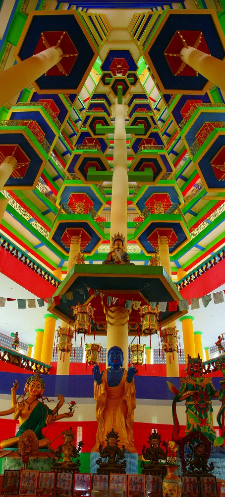
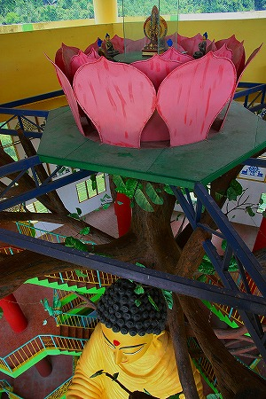

打捫心意佛院の
驚愕SFマンダラタワー。

ついにマンダラ世界の最上部までやってきた.
…と、達成感に浸る間もなく天井の一部が開いており、さらに上まで階段が伸びているのが見える。
…そうだった！この塔には
大仏があったじゃないか。
SFマンダラで驚いてしまい、すっかり忘れていたよ。すまん。
フロアの切れ目から見上げると…
おお、おりました！大仏さんが。
早速階段を上る。
この建物は極端に床が少ないので階数で表記するのは気が引けるのだが、大仏さんの建っている場所は10層目、つまり10階に相当するレベルだ。
背後から正面に回りこんで、と。
どどーん！
３層分ぶっこぬきの大仏さん。モノはFRPだと思う。
この塔の、いわば
第二幕の始まりだ。
特徴ありすぎの御尊顔。
目が大きい。目尻がコメカミまであるぞ。これもチベタンスタイルなのだろうか。
近寄って仰ぎ見る。意外と指先に生活感が漂ってますねー。
背後左右に階段があって、
ロボ格納庫っぽいところも私好みで大変結構である。
コレだけ高層階に格納されており、なおかつ外から丸見えの大仏さんってそうそうないでしょう。
大仏のあるスペースも階下のSFマンダラ同様、派手な色彩が飛び交っている。
そして階段もご覧の通り、常に人生は選択の連続なのだ、と言わんがばかりのディスティニー階段。まあ、上の階で合流するので結果どっちでもいいのだが。
ひとつ上の11階では大仏さんのお腹付近から間近に拝見できる。
大仏さんの前には蓮の台座に乗ったお地蔵さんが1対立っていた。
六角形の塔の正面部分だけ壁がなく、吹きさらしになっているので風が吹き抜け爽やかだ。
大仏さんの背後には菩提樹なのだろうか、コンクリで出来た樹木がプラスチックの葉を茂らせてる。
下のフロアと同じ形の階段が延びている。
今度も右で！
昇るとそこは大仏さんの目の高さ。12階に相当する。
正面には壁がなく、
大仏さんと同じ視点で遥か彼方まで見渡せる。
眼下には先ほど通ってきた池が見える。こうしてみると池だらけだ。錫の露天掘りの跡だろう。
見渡すと石灰石で出来た奇妙な形の山塊が多くあることに気付く。
このイポーという土地は錫が掘れ、鍾乳洞が多い場所なんだなー、と改めて思いました（小学生かっ）。
その手前には先ほど通ってきた回廊が見える。
上から見ると意外と地味なトタン屋根なんですね。
展望用の東屋だけは立派な瓦屋根。
外から見るとこんな感じ。
まだまだ終わらないぞ、一体どこまで続くんだこの塔。
と、いうわけでさらに大仏さんを見下ろすところまで登ってしまった。
大仏さんの頭上、コンクリ樹木に支えられるように蓮の花が開いている。

さらに外階段でやっと最上階である１３階へ到達した。
最後は三尊像でキッチリ締めてくれた。
いやー長かった。実際にいた時間も長かったが見所があまりにも多くて、まるで
何日間も塔の中を彷徨っていたような感覚だ。
最後の最後に最上階の周りを囲む六個のチベット風の仏塔にお参りして、と…

ああ、中はがらんどうだ。
と、ここでもうひとつの大仏さんを御紹介しよう。
真っ赤な衣をまとった大仏さんは
24ｍあり、ペラ州で最大の仏像だとか。
よく見ると背後はレンガ造りのビルにくっ付いていて、こちらもまたサンダーバードの基地みたいでカッコいい。
今すぐ走って大仏さんに登りたいのだが、最早この塔を下りて、さらにあの大仏の上まで登る体力も時間も残っていない。
残念ながらここから大仏さんの雄姿を目に焼き付けよう。
帰りは再び超絶SFマンダラを堪能しつつゆっくり階段を下る。
改めて外から見ると10階から上の大仏さんスペースは複雑な構想になっている。
調べてみたら完成は２００９年。１９９６年に建設を開始したというから干支が一回りする以上の時間をかけて作られたことになる。
超いい加減で恐縮だが、フロア構成はこんな感じでした
それにしても不思議な建物だった。
仏塔と大仏殿が縦に合体したような建物といえよう。
珍寺史上屈指の名仏塔だと思う。
次のお寺に大行進！
馬来西亜珍寺大行進
珍寺大道場 HOME